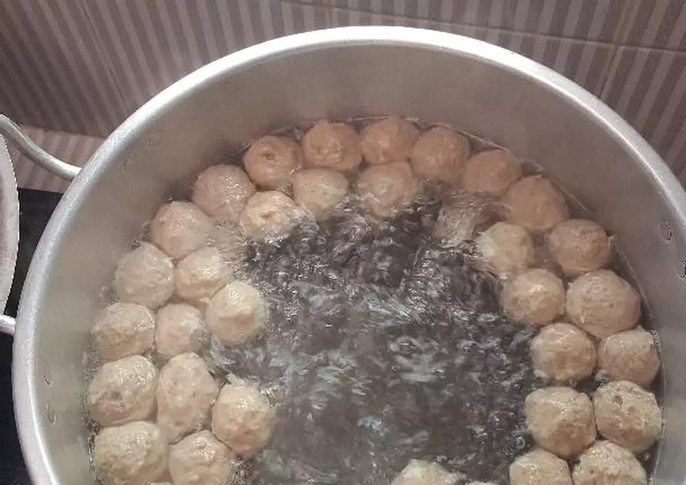
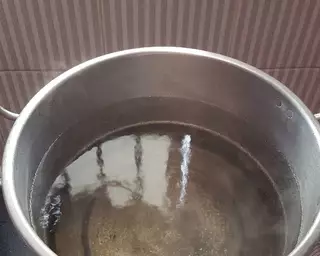
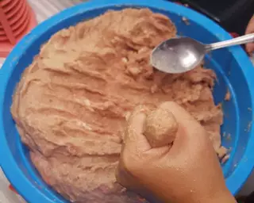
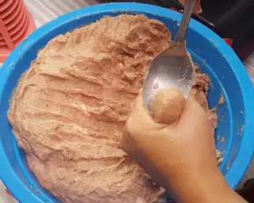
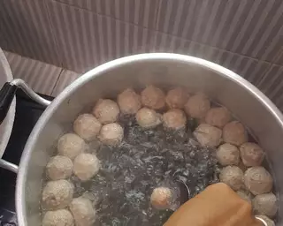
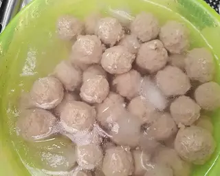

--- RESEP BAKSO SAPI ---

Bahan Bahan
- 1.5 kg Daging Sapi
- 3 ons sagu tani
- 10 butir bawang putih
- 2 bungkus lada bubuk
- 4 sdm garam halus
- 2 butir telor ayam
- 1 sdm baking powder
- Es batu secukupnya
- Air es batu
Langkah Langkah
- Giling daging dan semua bahan bumbu
- Masukkan adonan bakso ke dalam freezer sambil nunggu rebusan air dalam panci,
Gunakan panci yang besar dan airnya yang banyak agar memudahkan saat mengangkat bakso
yang telah mengapung

- Setelah air mendidih, ambil adonan bakso dan bentuk menggunakan tangan kiri
dengan mengambil sebagian adonan, kepalkan tangan dan keluarkan adonan di sela jari
telunjuk dan jempol

- Setelah adonan keluar dalam bentuk bulatan, ambil adonan yang telah bulat dengan
ujung sendok.

- Lalu celupkan ke dalam panci

- Bakso yang telah mengapung kita angkat dan kita masukkan ke dalam air es untuk
menjaga suhu dan biar tetap kenyal

- Setelah itu tiriskan kembali, dan simpan dalam plastik atau wadah tertutup rapat
lalu masukkan ke dalam freezer
- Jika mau dimasak, rebus lagi baksonya di air mendidih sekitar 5-10 menit biar
matang sempurna